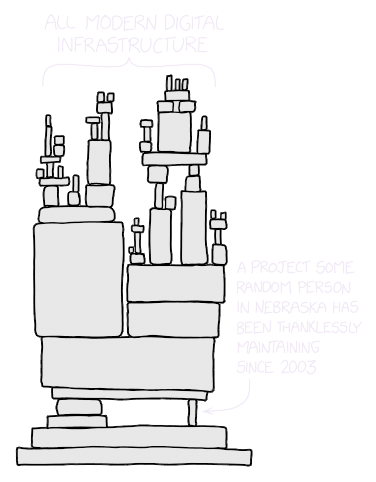

XKCD #2347, edited by Hana Dusíková
extern Ccxx crate
Less tightly coupled to an existing C++ ecosystem:
More tightly coupled to an existing C++ ecosystem:
fn `main`() {
let mut `s` = String::from("Hello");
s.`push_str`(" world!");
println!(`s`);
}
fn `Run`() {
var `s`: strbuf = "Hello";
s.`Append`(" world!");
Core.Print(`s`);
}
// tables.rs
`struct Table` { ... }
// `hosting`.rs
pub use crate::tables::Table;
pub fn add_to_waitlist() { ... }
pub fn seat_at_table() {
...
`crate::serving::add_table(t)`;
}
`pub fn clear_table`(t: Table) { ... }
// `serving`.rs
pub use crate::tables::Table;
`pub fn add_table`(t: Table) { ... }
pub fn take_order() {}
pub fn take_payment() {
...
`crate::hosting::clear_table(t)`;
}
// tables.carbon
class `Table` { ... }
fn `AddSeatedTable`(t: Table) { ... }
fn `ClearTable`(t: Table) { ... }
// hosting.carbon
import library "`tables.carbon`"
fn AddToWaitlist() { ... }
fn SeatAtTable() {
...
`AddSeatedTable`(t);
}
// serving.carbon
import library "`tables.carbon`"
fn TakeOrder() {}
fn TakePayment() {
...
`ClearTable`(t);
}
// tables.rs
struct Table { ... }
// hosting.rs
pub use crate::tables::Table;
pub fn add_to_waitlist() { ... }
pub fn seat_at_table() {
...
crate::serving::add_table(t);
}
pub fn clear_table(t: Table) { ... }
// serving.rs
pub use crate::tables::Table;
pub fn add_table(t: Table) { ... }
pub fn take_order() {}
pub fn take_payment() {
...
crate::hosting::clear_table(t);
}
// tables.carbon
class Table { ... }
fn AddSeatedTable(t: Table);
fn `ClearTable`(t: Table);
// tables.`impl`.carbon
fn AddSeatedTable(t: Table) { ... }
fn `ClearTable`(t: Table) { `...` }
// hosting.carbon
` `
fn AddToWaitlist();
fn `SeatAtTable`();
// hosting.`impl`.carbon
import library "`tables`.carbon"
fn AddToWaitlist() { ... }
fn SeatAtTable() {
...
`AddSeatedTable`(t);
}
package
impl file
*_fwd.h headers like ios_fwd.h -> Carbon extern declarations
struct `Up` {
`count`: i32,
}
impl `Up` {
fn `inc`(&mut self) { self.count += 1; }
}
class `Up` {
fn `Inc`[ref self: Self]() {
self.count += 1;
}
private var `count`: i32;
}
struct Up {
count: i32,
}
impl Up {
fn inc(&mut self) { self.count += 1; }
}
`base` class Up {
`virtual` fn Inc[ref self: Self]() {
self.count += 1;
}
`protected` var `count`: i32;
}
base class UpOrDown {
`extend base: Up`;
`override` fn Inc[ref self: Self]() {
self.Add(1);
}
`virtual` fn Dec[ref self: Self]() {
self.Add(-1);
}
private fn Add[ref self: Self](
delta: i32) {
self.count += delta;
}
}
fn `append_i32`(s: &mut String, i: i32) { ... }
fn `append_f32`(s: &mut String, f: f32) { ... }
`overload` Append {
`fn` (ref s: strbuf, i: i32) { ... }
`fn` (ref s: strbuf, f: i32) { ... }
}
// TODO: Rust generics example
// TODO: Carbon generics example, and then add specialization, and then a template
fn f(i: i64) {
let truncated = `<1>i as i32`;
let fallible =
`<2>i32::try_from(i).unwrap_or(-1)`;
}
fn make_i64<I: `<6>Into<i64>`>(i: I) -> i64 {
return `<7>i.into()`;
}
fn g(i: i32) {
let larger: i64 = `<3>i.into()`;
let larger2 = `<4>i64::from(i)`;
let larger3 = `<5>make_i64(i)`;
}
fn F(i: i64) {
let truncated: auto = `<9>i as i32`;
// Unwrapping syntax not yet decided...
}
fn Make64[I:! `<12>ImplicitAs(i64)`](i: I) -> i64 {
return `<13>i`;
}
fn G(i: i32) {
let larger: i64 = `<10>i`;
let larger3: auto = `<11>Make64(i)`;
}
use std::mem::MaybeUninit;
fn f<'a>(x: &mut `<1>MaybeUninit<&'a i32>`)
-> &'a i32 {
`<2>unsafe` { (`<4>*`x).`<3>assume_init()` }
}
fn g<'a>(x: `*`mut MaybeUninit<&'a i32>)
-> &'a i32 {
`unsafe` { (`*`x).assume_init() }
}
fn F[^a](x: `Core.MaybeUninit`(`i32*` ^a)`*`)
-> i32* ^a {
return (*x).`unsafe` `assume_init`();
}
fn G[^a](x: Core.MaybeUninit(i32* ^a)`* unsafe`)
-> i32* ^a {
return (`unsafe` `*`x).`unsafe` assume_init();
}
fn g(_: &i32, _: &i32) {}
fn g_mutate(_: &mut i32, _: &mut i32) {}
fn f(`x: &i32`, `y: &mut i32`) {
// OK: Can have many shared borrows.
`g(x, x)`;
// ERROR: Can't mutate.
`*x = 42`;
// OK: Can mutate.
`*y = 42`;
// ERROR: Can't have more than one
// mutable borrow.
`g_mutate`(`y`, `y`);
}
fn G(_: i32, _: i32) {}
fn GMutate(ref _: i32, ref _: i32) {}
fn f(`x: i32`, `ref` y: i32) {
// OK: Can have many immutable values.
`G(x, x)`;
// ERROR: Can't mutate.
`x = 42`;
// OK: Can mutate.
`y = 42`;
// OK: Can mutate multiple objects.
`GMutate`(`ref y`, `ref y`);
}
OPENSSL_EXPORT int EVP_AEAD_CTX_seal_scatter(
const EVP_AEAD_CTX *ctx,
`uint8_t *out`,
`uint8_t *out_tag`, size_t *out_tag_len, `size_t max_out_tag_len`,
`const uint8_t *nonce`, `size_t nonce_len`,
const uint8_t *in, size_t in_len,
const uint8_t *extra_in, size_t extra_in_len,
const uint8_t *ad, size_t ad_len);
int EVP_AEAD_CTX_seal_scatter(
const EVP_AEAD_CTX *ctx,
`<2>std::span<uint8_t> out`,
`<3>std::span<uint8_t> out_tag`,
size_t *out_tag_len,
std::span<const uint8_t> nonce,
`<1>std::span<const uint8_t> in`,
std::span<const uint8_t> extra_in,
std::span<const uint8_t> ad);
fn EVP_AEAD_CTX_seal_scatter[`<5>^a`](
ctx: const EVP_AEAD_CTX `<6>^a` *,
out: slice(u8 `<7>^a`),
out_tag: slice(u8 `<8>^a`),
out_tag_len: u64 ^a *,
nonce: slice(const u8 ^a),
input: slice(const u8 `<9>^a`),
extra_input: slice(const u8 ^a),
ad: slice(const u8 ^a) ad) -> i32;
int EVP_AEAD_CTX_seal_scatter(
const EVP_AEAD_CTX *ctx,
`<2>std::span<uint8_t> out`,
std::span<uint8_t> out_tag,
size_t *out_tag_len,
std::span<const uint8_t> nonce,
`<1>std::span<const uint8_t> in`,
std::span<const uint8_t> extra_in,
std::span<const uint8_t> ad);
fn EVP_AEAD_CTX_seal_scatter[^a](
ctx: const EVP_AEAD_CTX ^a *,
`<2>out: slice(u8 ^a)`,
out_tag: slice(u8 ^a),
out_tag_len: u64 ^a *,
nonce: slice(const u8 ^a),
`<1>input: slice(const u8 ^a)`,
extra_input: slice(const u8 ^a),
ad: slice(const u8 ^a) ad) -> i32;
int EVP_AEAD_CTX_seal_scatter(
const EVP_AEAD_CTX *ctx,
`<1>std::span<uint8_t> out`,
`<4>std::span<uint8_t> out_tag`,
size_t *out_tag_len,
std::span<const uint8_t> nonce,
`<1>std::span<const uint8_t> in`,
std::span<const uint8_t> extra_in,
std::span<const uint8_t> ad);
fn EVP_AEAD_CTX_seal_scatter[`<2>^inout`](
ctx: const EVP_AEAD_CTX ^*,
`<3>out: slice(u8 ^inout)`,
`<5>out_tag`: slice(u8 `<6>^`),
out_tag_len: u64 ^*,
nonce: slice(const u8 ^),
`<3>input: slice(const u8 ^inout)`,
extra_input: slice(const u8 ^),
ad: slice(const u8 ^)) -> i32;
pub trait Aead {
fn encrypt<'msg, 'aad>(
&self,
nonce: &Nonce<Self>,
`plaintext`: impl Into<Payload<'msg, 'aad>>,
) -> Result<`Vec<u8>`>;
}
pub trait AeadInPlace {
fn encrypt_in_place_detached(
&self,
nonce: &Nonce<Self>,
associated_data: &[u8],
`buffer`: &mut [u8],
) -> Result<Tag<Self>>;
}
https://docs.rs/aead/latest/aead/trait.Aead.html https://docs.rs/aead/latest/aead/trait.AeadInPlace.html
class DeviceBase {
public:
// Returns a pointer into an internal buffer.
auto `GetInternalFormat`(wgpu::TextureFormat format) const
-> `const Format*` {
return &mFormatTable[ComputeFormatIndex(format)];
}
// Adds a value to an internal set.
auto `EmitWarningOnce`(std::string_view message) -> void {
`mWarnings.insert`(std::string{message});
}
private:
std::array<Format, 109> `mFormatTable`;
std::set<std::string> `mWarnings`;
};
auto ValidateStorageTextureFormat(
DeviceBase* device,
wgpu::TextureFormat storageTextureFormat,
wgpu::StorageTextureAccess access) -> MaybeError {
// Holding a pointer into ``device``
const Format* `format` =
device->GetInternalFormat(storageTextureFormat);
if (storageTextureFormat == wgpu::TextureFormat::BGRA8Unorm &&
access == wgpu::StorageTextureAccess::ReadOnly) {
// A shape change inside ``device``.
`device->EmitWarningOnce`(
"bgra8unorm with read-only access is deprecated.");
}
// Dereferencing the pointer after a shape change of ``device``.
if (!TextureFormatSupportStorageAccess(`*format`, access)) {
return ErrorData("Format does not support storage texture access.");
}
return {};
}
class DeviceBase {
// Returns a pointer into an internal buffer.
fn GetInternalFormat[`ref` self: `const Self`](
format: Wgpu.TextureFormat) -> const Format `^self` `*` {
return &self.mFormatTable[ComputeFormatIndex(format)];
}
// Adds a value to an internal set.
fn EmitWarningOnce[`ref` `exclusive` self: Self](message: Core.Str) {
// insert() requires exclusive access to ``self.mWarnings`` which
// requires exclusive access to ``self``.
self.mWarnings.insert(Core.StrBuf.Make(message));
}
private var mFormatTable: array(Format, 109);
private var mWarnings: Cpp.std.set(Core.StrBuf);
}
fn ValidateStorageTextureFormat(
device: DeviceBase `exclusive` *,
storageTextureFormat: Wgpu.TextureFormat,
access: Wgpu.StorageTextureAccess) -> MaybeError {
// Holding a pointer into ``device``, holds a non-exclusive borrow on ``device``.
let `format`: const Format`*` =
`device`->GetInternalFormat(storageTextureFormat);
if (storageTextureFormat == Wgpu.TextureFormat.BGRA8Unorm &&
access == Wgpu.StorageTextureAccess.ReadOnly) {
// ERROR under strict compilation, but allowed in permissive mode.
// A shape change inside ``device``. Needs an exclusive borrow on ``device``
`device->EmitWarningOnce`(
"bgra8unorm with read-only access is deprecated.");
}
// Dereferencing the pointer after a shape change of ``device``.
if (!TextureFormatSupportStorageAccess(*format, access)) {
return ErrorData("Format does not support storage texture access.");
}
return {};
}
fn ValidateStorageTextureFormat(
device: &mut DeviceBase,
storageTextureFormat: Wgpu::TextureFormat,
access: Wgpu::StorageTextureAccess) -> Result<(), String> {
// Holding a pointer into ``device``, holds a non-exclusive borrow on ``device``.
let `format`: `&`Format =
`device`.GetInternalFormat(storageTextureFormat);
if storageTextureFormat == Wgpu::TextureFormat::BGRA8Unorm &&
access == Wgpu::StorageTextureAccess::ReadOnly {
// ERROR: A shape change inside ``device``.
// Needs an exclusive borrow on ``device``.
`device.EmitWarningOnce`(
"bgra8unorm with read-only access is deprecated.");
}
// Dereferencing the pointer after a shape change of ``device``.
if !TextureFormatSupportStorageAccess(*format, access) {
return Err("Format does not support storage texture access.".to_string());
}
return Ok(());
}
fn ValidateStorageTextureFormat(
device: &mut DeviceBase,
storageTextureFormat: Wgpu::TextureFormat,
access: Wgpu::StorageTextureAccess) -> Result<(), String> {
// Holding an unsafe pointer into ``device``.
let `format`: `*`const Format =
device.GetInternalFormat(storageTextureFormat) as `*const _`;
if storageTextureFormat == Wgpu::TextureFormat::BGRA8Unorm &&
access == Wgpu::StorageTextureAccess::ReadOnly {
// OK because we used a raw pointer instead of a non-exclusive borrow.
// But still does a shape change.
`device`.EmitWarningOnce(
"bgra8unorm with read-only access is deprecated.");
}
// Dereferencing the pointer after a shape change of ``device``.
// **UB** in Rust with unsafe pointers: The format pointer was invalidated
// by the exclusive borrow of ``device``.
if !TextureFormatSupportStorageAccess(unsafe { `*format` }, access) {
return Err("Format does not support storage texture access.".to_string());
}
return Ok(());
}
error: Undefined Behavior: attempting a read access using <370> at alloc308[0x18],
but that tag does not exist in the borrow stack for this location
--> src/main.rs:60:50
|
60 | if !TextureFormatSupportStorageAccess(unsafe { *format }, access) {
| ^^^^^^^ this error occurs as part of an
| access at alloc308[0x18..0x1c]
|
help: <370> was created by a SharedReadOnly retag at offsets [0x18..0x1c]
--> src/main.rs:46:31
|
47 | device.GetInternalFormat(storageTextureFormat) as *const _;
| ^^^^^^^^^^^^^^^^^^^^^^^^^^^^^^^^^^^^^^^^^^^^^^
help: <370> was later invalidated at offsets [0x0..0x1d0] by a Unique function-entry retag
inside this call
--> src/main.rs:52:5
|
53 | / device.EmitWarningOnce(
54 | | "bgra8unorm with read-only access is deprecated.");
| |__________________________________________________________^
fn ValidateStorageTextureFormat(
device: DeviceBase exclusive *,
storageTextureFormat: Wgpu.TextureFormat,
access: Wgpu.StorageTextureAccess) -> MaybeError {
// Holding a pointer into ``device``, holds a non-exclusive borrow on ``device``.
let format: const Format* = device->GetInternalFormat(storageTextureFormat);
if (storageTextureFormat == Wgpu.TextureFormat.BGRA8Unorm &&
access == Wgpu.StorageTextureAccess.ReadOnly) {
// ERROR under strict compilation, but allowed in permissive mode.
// A shape change inside ``device``. Needs an exclusive borrow on ``device``
device->EmitWarningOnce(
"bgra8unorm with read-only access is deprecated.");
}
// Dereferencing the pointer after a shape change of ``device``.
// **Not UB** in Carbon.
if (!TextureFormatSupportStorageAccess(`*format`, access)) {
return ErrorData("Format does not support storage texture access.");
}
return {};
}